Section XI - Glossary
Page 295

muca SECTION xl GLOSSARY The definitions in this section are phrased in terms commonly used within the insulation industry.
Although they may indicate a somewhat different definition than appears in a dictionary or scientific glossary, they are, nevertheless, accurately tuned to the ear of the insulation contractor or specifying engineer.
ABATEMENT: See Asbestos Abatement.
ABRASION RESISTANCE: The ability of a material to withstand abrasion without wearing away.
ABSORPTION: The property of a material to assimilate liquids through its structure; sound: that property of a material that converts sound energy into heat energy, generally expressed as the materials' sound absorption coefficients or noise reduction coefficients (NRC).
ABUSE COVERINGS AND FINISHES: Jackets or mastics used to protect insulation from mechanical and personnel abuse.
ACOUSTICAL TREATMENT: Application of absorbing insulation for sound control.
ACRYLONITRILE-BUTADIENESTYRENE (ABS): A high-impact plastic.
ADHESIVE: A substance used to bond materials by surface attachment.
AIR CONDITIONED SPACE: Building area supplied with cooled conditioned air.
AIR CONDITIONING: see Conditioned Air.
ALKALINITY: The quality of a material to be basic or alkaline when exposed to moisture or water producing a blue reaction to litmus paper.
A pH over 7.
AMBIENT: (adj.) Surrounding — encompassing (Generally applied to temperature, humidity and atmospheric conditions).
AMBIENT TEMPERATURE: The average temperature of the rnedium, usually air, surrounding the object under consideration.
85
Page 296
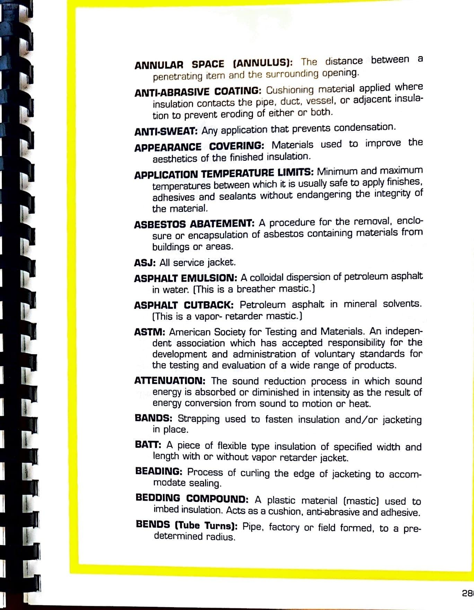
I 1 The distance between a ANNULAR SPACE (ANNULUS): penetrating Item and the surrounding opening.
Cushioning material applied where ANTI-ABRASIVE COATING: insulation contacts the Pipe, duct, vessel, or adjacent insula- tion to prevent eroding of ether or both.
ANTISWEAT: Any application that prevents condensation.
APPEARANCE COVERING: Materials used to improve the aesthetics of the finished insulation.
APPLICATION TEMPERATURE LIMITS: Minimum and maximum temperatures between which it is usually safe to apply finishes, adhesives and sealants Without endangering the integrity of the material.
ASBESTOS ABATEMENT: A procedure for the removal, enclo- sure or encapsulation of asbestos containing materials from buildings or areas.
ASJ: All service jacket.
ASPHALT EMULSION: A colloidal dispersion of petroleum asphalt in water.
[This is a breather mastic.) ASPHALT CUTBACK: Petroleum asphalt in mineral solvents.
(This is a vapor- retarder mastic.) ASTM: American Society for Testing and Materials.
An indepen- dent association which has accepted responsibility for the development and administration of voluntary standards for the testing and evaluation of a wide range of products.
ATTENUATION: The sound reduction process in which sound energy is absorbed or diminished in intensity as the result of energy conversion from sound to motion or heat.
BANDS: Strapping used to fasten insulation and/or jacketing in place.
BATT: A piece of flexible type insulation of specified width and length with or without vapor retarder jacket.
BEADING: Process of curling the edge of jacketing to accom- modate sealing.
BEDDING COMPOUND: A plastic material (mastic) used to imbed insulation.
Acts as a cushion, anti-abrasive and adhesive.
BENDS (Tube Turns): Pipe, factory or field formed.
to a pre- determined radius.
28
Page 297
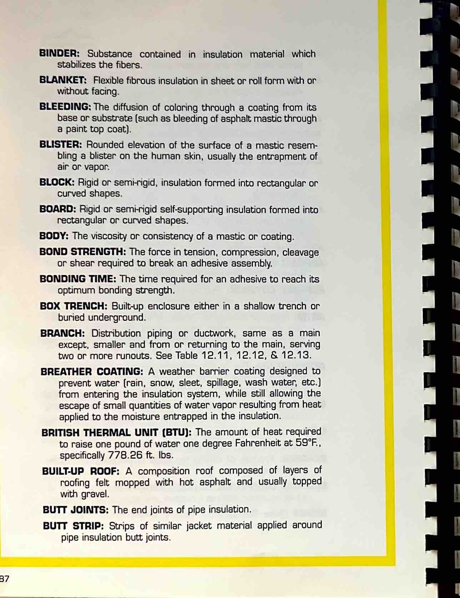
BINDER: Substance contained in insulation material which stabilizes the fibers.
BLANKET: Flexible fibrous insulation in sheet or roll form with or without facing.
BLEEDING: The diffusion of coloring through a coating from its base or substrate (such as bleeding of asphalt mastic through a paint top coat).
BLISTER: Rounded elevation of the surface of a mastic resem- bling a blister on the human skin, usually the entrapment of air or vapor.
BLOCK: Rigid or semi-rigid, insulation formed into rectangular or curved shapes.
BOARD: Rigid or semi-rigid self-supporting insulation formed into rectangular or curved shapes.
BODY: The viscosity or consistency of a mastic or coating.
BOND STRENGTH: The force in tension, compression.
cleavage or shear required to break an adhesive assembly.
BONDING TIME: The time required for an adhesive to reach its optimum bonding strength BOX TRENCH: Built-up enclosure either in a shallow trench or buried underground.
BRANCH: Distribution piping or ductwork, same as a main except, smaller and from or returning to the main, serving two or more runouts.
See Table 12.11, 12.12, & 12.13.
BREATHER COATING: A weather barrier coating designed to prevent water (rain, snow, sleet, spillage, wash water, etc.) from entering the insulation system, while still allowing the escape of small quantities of water vapor resulting from heat applied to the moisture entrapped in the insulation.
BRITISH THERMAL UNIT (BTU): The amount of heat required to raise one pound of water one degree Fahrenheit at 590F., specifically 778.26 ft.
lbs.
BUILT-UP ROOF: A composition roof composed of layers of roofing felt mopped with hot asphalt and usually topped With gravel.
BUTT JOINTS: The end joints of pipe insulation.
BUTT STRIP: Stnps of similar jacket material applied around pipe insulation butt joints.
37
Page 298
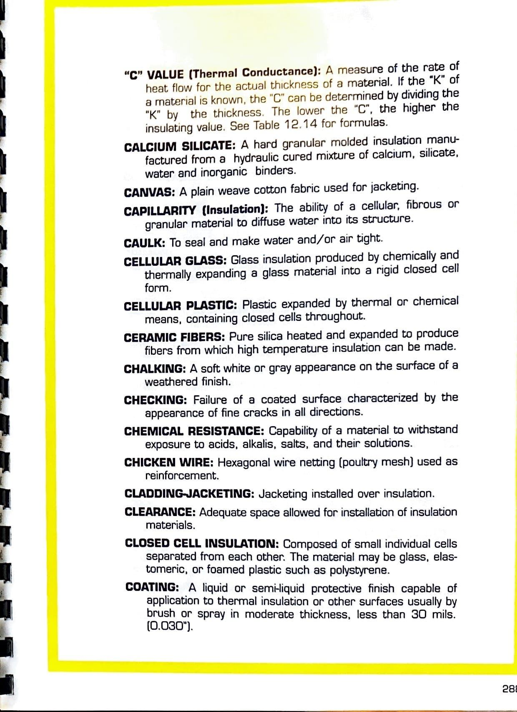
"C" VALUE (Thermal Conductance): A measure of the rate of heat flow for the actual thickness of a material.
If the • K" of a matenal is known, the "C" can be determined by dividing the "K" by the thickness.
The lower the the higher the insulating value.
See Table 12.14 for formulas.
CALCIUM SILICATE: A hard granular molded insulation manu- factured from a hydraulic cured mixture of calcium, silicate.
water and inorganic binders.
CANVAS: A plain weave cotton fabric used for jacketing.
CAPILLARITY (Insulation): The ability of a cellular, fibrous or granular material to diffuse water into fts structure.
CAULK: To seal and make water and/or air tight.
CELLULAR GLASS: Glass insulation produced by chemically and thermally expanding a glass material into a rigid closed cell form.
CELLULAR PLASTIC: Plastic expanded by thermal or chemical means, containing closed cells throughout.
CERAMIC FIBERS: Pure silica heated and expanded to produce fibers from which high temperature insulation can be made.
CHALKING: A soft white or gray appearance on the surface of a weathered finish.
CHECKING: Failure of a coated surface characterized by the appearance of fine cracks in all directions.
CHEMICAL RESISTANCE: Capability of a material to withstand exposure to acids, alkalis, salts, and their solutions.
CHICKEN WIRE: Hexagonal wire netting (poulusy mesh) used as reinforcement.
CLADDING-JACKETING: Jacketing installed over insulation.
CLEARANCE: Adequate space allowed for installation of insulation materials.
CLOSED CELL INSULATION: Composed of small individual cells separated from each other.
The material may be glass.
elas- tomeric, or foamed plastic such as polystyrene.
COATING: A liquid or semi-liquid protective finish capable of application to thermal insulation or other surfaces usually by brush or spray in moderate thickness, less than 30 mils.
(0.030").
281
Page 299
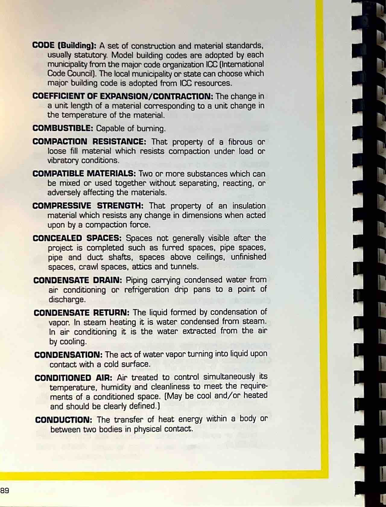
CODE (Building): A set of construction and material standards, usually statutory.
Model building codes are adopted by each municipality from the major code organizabon ICC (International Code Council).
lhe local municipality or state can choose which major building code is adopted from ICC resources.
COEFFICIENT OF EXPANSION/CONTRACTION: The change in a unit length of a material corresponding to a unit change in the temperature of the material.
COMBUSTIBLE: Capable of burning.
COMPACTION RESISTANCE: That property of a fibrous or loose fill material which resists compaction under load or vibratory conditions.
COMPATIBLE MATERIALS: Two or more substances which can be mixed or used together without separating, reacting, or adversely affecting the materials.
COMPRESSIVE STRENGTH: That property of an insulation material which resists any change in dimensions when acted upon by a compaction force.
CONCEALED SPACES: Spaces not generally visible after the project is completed such as furred spaces, pipe spaces, pipe and duct shafts, spaces above ceilings, unfinished spaces, crawl spaces, attics and tunnels.
CONDENSATE DRAIN: Piping carrying condensed water from air conditioning or refrigeration drip pans to a point of discharge.
CONDENSATE RETURN: The liquid formed by condensation of vapor.
In steam heating it is water condensed from steam.
In air conditioning it is the water extracted from the air by cooling.
CONDENSATION: The act of water vapor turning into liquid upon contact with a cold surface.
CONDITIONED AIR: Air treated to control simultaneously its temperature, humidity and cleanliness to meet the require- ments of a conditioned space.
(May be cool and/or heated and should be clearly defined.) CONDUCTION: The transfer of heat energy within a body or between two bodies in physical contact, 89
Page 300
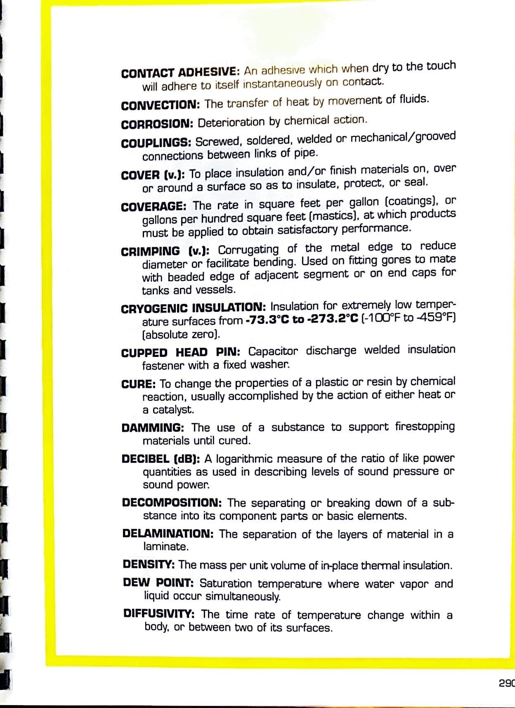
• An adhesive which when dry to the touch CONTACT ADHESIVE.
will adhere to Itself Instantaneously on contact.
CONVECTION: The transfer of heat by movement of fluids.
CORROSION: Deterioration by chemical action.
COUPLINGS: Screwed, soldered, welded or mechanical/grooved connections between links of pipe.
COVER To place insulation and/or finish materials on, over or around a surface so as to insulate, protect, or seal.
COVERAGE: The rate in square feet per gallon (coatings), or gallons per hundred square feet (mastics), at which products must be applied to obtain satisfactory performance.
CRIMPING Corrugating of the metal edge to reduce diameter or facilitate bending.
Used on füng gores to mate with beaded edge of adjacent segment or on end caps for tanks and vessels.
CRYOGENIC INSULATION: Insulation for extremely low temper- ature surfaces from -73.30C to -273.20C (-1 OOOF to 4590F) (absolute zero).
CUPPED HEAD PIN: Capacitor discharge welded insulation fastener with a fixed washer.
CURE: To change the properties of a plastic or resin by chemical reaction, usually accomplished by the action of ether heat or a catalyst.
DAMMING: The use of a substance to support firestopping materials until cured.
DECIBEL (dB): A logarithmic measure of the ratio of like power quantities as used in describing levels of sound pressure or sound power.
DECOMPOSITION: The separating or breaking down of a sub- stance into its component parts or basic elements.
DELAMINATION: The separation of the layers of material in a laminate.
DENSITY: The mass per unit volume of in-place thermal insulation.
DEW POINT: Saturation temperature where water vapor and liquid occur simultaneously.
DIFFUSIVITY: The time rate of temperature change within a body.
or between two of its surfaces.
29C
Page 301
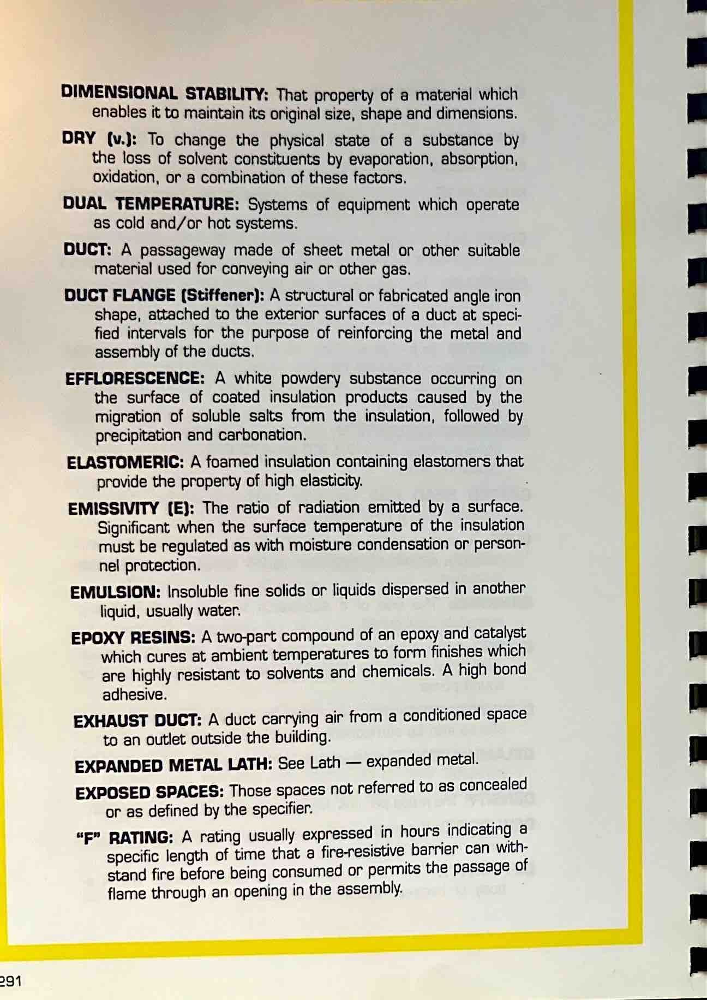
DIMENSIONAL STABILITY: That property of a material which enables it to maintain its original size, shape and dimensions.
DRY To change the physical state of substance by the loss of solvent constituents by evaporation, absorption, oxidation, or a combination of these factors.
DUAL TEMPERATURE: Systems of equipment which operate as cold and/or hot systems.
DUCT: A passageway made of sheet metal or other suitable material used for conveying air or other gas.
DUCT FLANGE (Stiffener): A structural or fabricated angle iron shape, attached to the exterior surfaces of a duct at speci- fied intervals for the purpose of reinforcing the metal and assembly of the ducts.
EFFLORESCENCE: A white powdery substance occurring on the surface of coated insulation products caused by the migration of soluble salts from the insulation, followed by precipitation and carbonation.
ELASTOMERIC: A foamed insulation containing elastomers that provide the property of high elasticity.
EMISSIVITY (E): The ratio of radiaüon emited by a surface.
Significant when the surface temperature of the insulation must be regulated as with moisture condensation or person- nel protection.
EMULSION: Insoluble fine solids or liquids dispersed in another liquid, usually water.
EPOXY RESINS: A Duo-part compound of an epoxy and catalyst which cures at ambient temperatures to form finishes which are highly resistant to solvents and chemicals.
A high bond adhesive.
EXHAUST DUCT: A duct carrying air from a conditioned space to an outlet outside the building.
EXPANDED METAL LATH: see Lath — expanded metal.
EXPOSED SPACES: Those spaces not referred to as concealed or as defined by the specifier.
"F" RATING: A rating usually expressed in hours indicating a specific length of time that a fire-resistive barrier can with- stand fire before being consumed or permits the passage of flame through an opening in the assembly.
291
Page 302
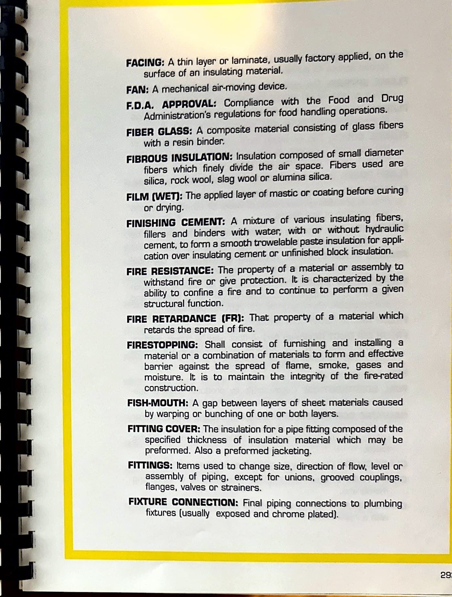
FACING: A thin layer or laminate, usually factory applied, on the surface of an insulating material.
FAN: A mechanical air-moving device.
F.D.A.
APPROVAL: Compliance with the Food and Drug Administration's regulations for food handling operations.
FIBER GIASS: A composite material consist,ing of glass fibers with a resin binder.
FIBROUS INSULATION: Insulation composed of small diameter fibers which finely divide the air space.
fibers used are silica, rock wool, slag wool or alumina silica.
FILM (WET): The applied layer of mastic or coating before curing or drying.
FINISHING CEMENT: A mixture of various insulating fibers, fillers and binders with water, with or without hydraulic cement, to form a smooth b•owelable paste insulation for applP cation over insulating cement or unfinished block insulation.
FIRE RESISTANCE: The property of a material or assembly to withstand fire or give protection.
It is characterized by the ability to confine a fire and to continue to perform a given structural function.
FIRE RETARDANCE (FR): That property of a material which retards the spread of fire.
FIRESTOPPING: Shall consist of furnishing and installing a material or a combination of materials to form and effective barrier against the spread of flame, smoke.
gases and moisture.
It is to maintain the integrity of the fire-rated construction.
FISH-MOUTH: A gap between layers of sheet materials caused by warping or bunching of one or both layers.
FITTING COVER: The insulation for a pipe fiting composed of the specified thickness of insulation material which may be preformed.
Also a preformed jacketing.
FITTINGS: Items used to change size.
direction of flow, level or assembly of piping, except for unions.
grooved couplings, flanges, valves or strainers.
FIXTURE CONNECTION: Final piping connections to plumbing fixtures (usually exposed and chrome plated).
29
Page 303
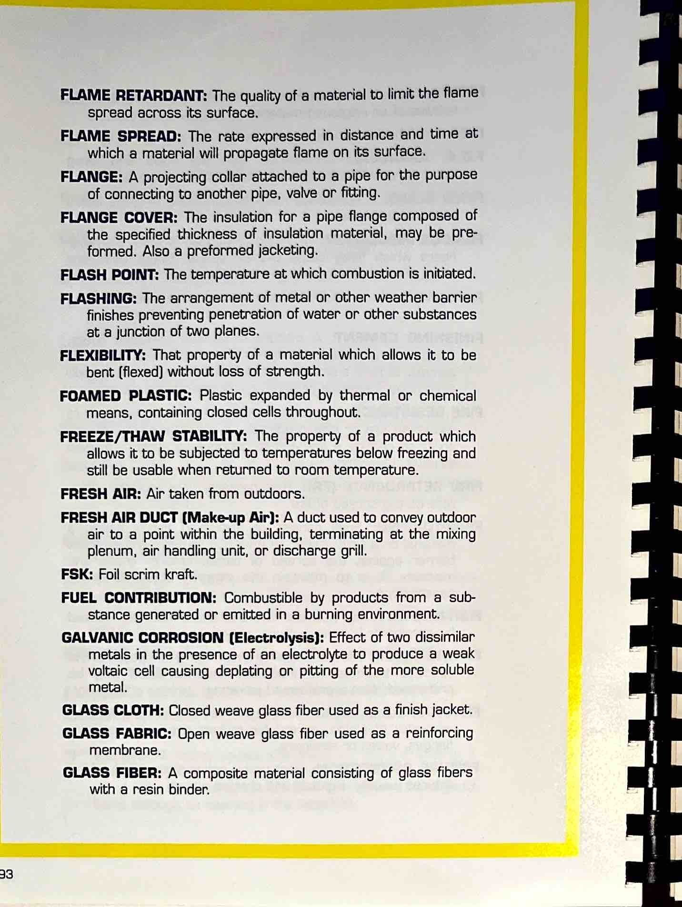
FLAME RETARDANT: The quality of a material to limit the flame spread across its surface.
FLAME SPREAD: The rate expressed in distance and time at which a material will propagate flame on its surface.
FLANGE: A projecting collar atached to a pipe for the purpose of connecting to another pipe, valve or fitting.
FLANGE COVER: The insulation for a pipe flange composed of the specified thickness of insulation material, may be pre- formed.
Also a preformed jacketing.
FLASH POINT: The temperature at which combustion is initiated.
FLASHING: The arrangement of metal or other weather barrier finishes preventing penetration of water or other substances at a junction of planes.
FLEXIBILITY: That property of a material which allows it to be bent (flexed) without loss of strength.
FOAMED PLASTIC: Plastic expanded by thermal or chemical means, containing closed cells throughout.
FREEZE/THAW STABILITY: The property of a product which allows it to be subjected to temperatures below freezing and still be usable when returned to room temperature.
FRESH AIR: Air taken from outdoors.
FRESH AIR DUCT (Make-up Air): A duct used to convey outdoor air to a point within the building, terminating at the mixing plenum, air handling unit, or discharge grill.
FSK: Foil scrim kraft.
FUEL CONTRIBUTION: Combustible by products from a sub- stance generated or emitted in a burning environment.
GALVANIC CORROSION (Electrolysis): Effect of two dissimilar metals in the presence of an electrolyte to produce a weak voltaic cell causing deplating or pitting of the more soluble metal.
GLASS CLOTH: Closed weave glass fiber used as a finish jacket.
GLASS FABRIC: Open weave glass fiber used as a reinforcing membrane.
GLASS FIBER: A composite material consisting of glass fibers with a resin binder.
33
Page 304
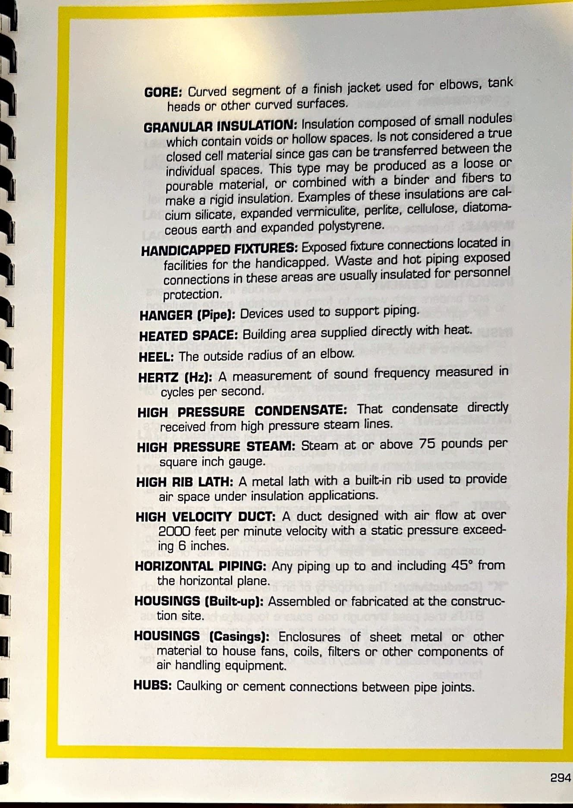
GORE: Curved segment of a finish jacket used for elbows, tank heads or other curved surfaces.
GRANULAR INSULATION: Insulation composed of small nodules which contain voids or hollow spaces.
Js not considered a true closed cell material since gas can be transferred between the individual spaces, This type may be produced as a loose or pourable material, or combined with a binder and fibers to make a rigid insulation.
Examples of these insulations are cal- cium silicate, expanded vermiculite, perlite, cellulose, diatoma- ceous earth and expanded polystyrene.
HANDICAPPED FIXTURES: Exposed connections located in facilities for the handicapped.
Waste and hot piping exposed connections in these areas are usually insulated for personnel protection.
HANGER (Pipe): Devices used to support piping.
HEATED SPACE: Building area supplied directly with heat.
HEEL: The outside radius of an elbow.
HERTZ (Hz): A measurement of sound frequency measured in cycles per second.
HIGH PRESSURE CONDENSATE: That condensate directly received from high pressure steam lines.
HIGH PRESSURE STEAM: Steam at or above 75 pounds per square inch gauge.
HIGH RIB LATH: A metal lath with a built-in rib used to provide air space under insulation applications.
HIGH VELOCITY DUCT: A duct designed with air flow at over 2000 feet per minute velocity with a static pressure exceed- ing 6 inches.
HORIZONTAL PIPING: Any piping up to and including 450 from the horizontal plane.
HOUSINGS (Built-up): Assembled or fabricated at the construc- tion site.
HOUSINGS (Casings): Enclosures of sheet metal or other material to house fans, coils, filters or other components of air handling equipment.
HUBS: Caulking or cement connections between pipe joints.
294
Page 305
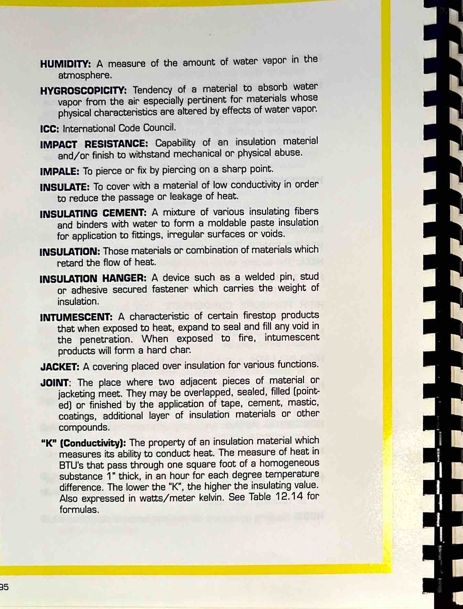
HUMIDITY: A measure of the amount of water vapor in the atmosphere.
HYGROSCOPICITY: Tendency of a material to absorb water vapor from the air especially pertinent for materials whose physical characteristics are altered by effects of water vapor.
ICC: International Code Council.
IMPACT RESISTANCE: Capability of an insulation material and/or finish to withstand mechanical or physical abuse.
IMPALE: To pierce or fix by piercing on a sharp point.
INSULATE: To cover with a material of low conductivity in order to reduce the passage or leakage of heat.
INSULATING CEMENT: A mixture of various insulating fibers and binders with water to form a moldable paste insulation for application to fittings, irregular surfaces or voids.
INSULATION: Those materials or combination of materials which retard the flow of heat.
INSULATION HANGER: A device such as a welded pin, stud or adhesive secured fastener which carries the weight of insulation.
INTUMESCENT: A characteristic of certain firestop products that when exposed to heat, expand to seal and fill any void in the penetration.
When exposed to fire.
intumescent products will form a hard char.
JACKET: A covering placed over insulation for various functions.
JOINT: The place where two adjacent pieces of material or jacketing meet.
They may be overlapped.
sealed, filled (point- ed) or finished by the application of tape, cement, mastic, coatings, additional layer of insulation materials or other compounds.
"K" (Conductivity): The property of an insulation material which measures its ability to conduct heat.
The measure of heat in BTU's that pass through one square foot of a homogeneous substance 1" thick, in an hour for each degree temperature difference.
The lower the "K", the higher the insulating value.
Also expressed in wats/meter kelvin.
See Table 12.14 for formulas.
35
Page 306
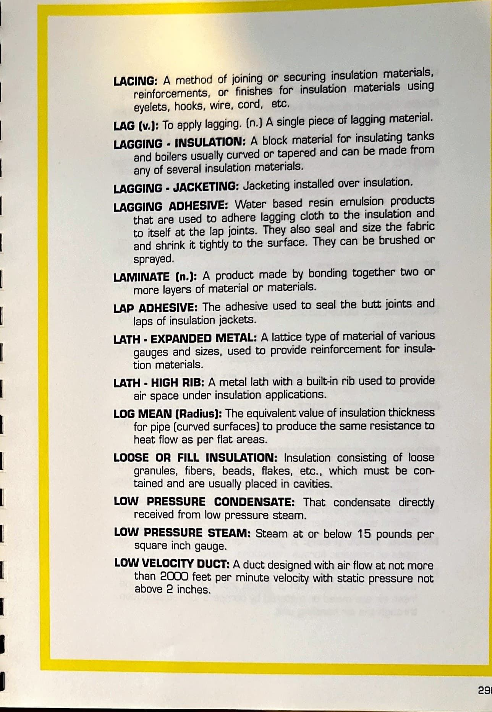
LACING: A method of joining or securing insulation materials, reinforcements, or finishes for insulation materials using eyelets, hooks, wire, cord, etc.
LAG To apply lagging.
(n.) A single piece of lagging material.
LAGGING • INSULATION: A block material for insulating tanks and boilers usually curved or tapered and can be made from any of several insulation materials.
LAGGING • JACKETING: Jacketing installed over insulation.
LAGGING ADHESIVE: Water based resin emulsion products that are used to adhere lagging cloth to the insulation and to itself at the lap joints.
They also seal and size the fabric and shrink it tightly to the surface.
They can be brushed or sprayed.
LAMINATE (n.): A product made by bonding together two or more layers of material or materials.
LAP ADHESIVE: The adhesive used to seal the butt joints and laps of insulation jackets.
LATH - EXPANDED METAL: A lattice type of material of various gauges and sizes, used to provide reinforcement for insula- tion materials.
LATH • HIGH RIB: A metal lath with a built-in rib used to provide air space under insulation applications.
LOG MEAN (Radius): The equivalent value of insulation thickness for pipe [curved surfaces) to produce the same resistance to heat flow as per flat areas.
LOOSE OR FILL INSULATION: Insulation consisting of loose granules, fibers, beads, flakes, etc., which must be con- tained and are usually placed in cavities.
LOW PRESSURE CONDENSATE: That condensate directly received from low pressure steam.
LOW PRESSURE STEAM: Steam at or below 15 pounds per square inch gauge.
LOW VELOCITY DUCT: A duct designed with air flow at not more than 2000 feet per minute velocity with static pressure not above 2 inches.
29
Page 307
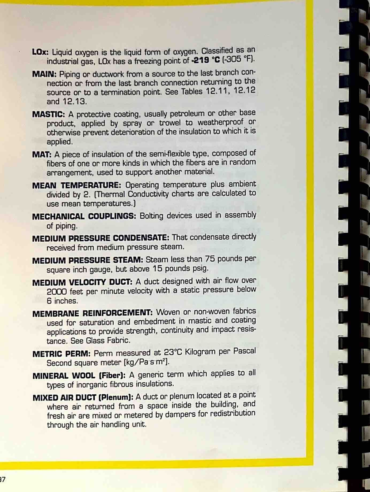
Lox: Liquid oxygen is the liquid form of oxygen.
Classified as an industrial gas, LOX has a freezing point of •219 oc (-305 OF).
MAIN: Piping or ductv•nrk from a source to the last branch con- nection or from the last branch connection returning to the source or to a termination point.
See Tables 12.11, 12.12 and 12.13.
MASTIC: A protective coating, usually petroleum or other base product, applied by spray or trowel to weatherproof or otherwise prevent deterioration of the insulation to which it is applied.
MAT: A piece of insulation of the semi-flexible type, composed of fibers of one or more kinds in which the fibers are in random arrangement, used to support another material.
MEAN TEMPERATURE: Operating temperature plus ambient divided by 2.
(Thermal Conductivity charts are calculated to use mean temperatures.) MECHANICAL COUPLINGS: Bolting devices used in assembly of piping.
MEDIUM PRESSURE CONDENSATE: That condensate directly received from medium pressure steam.
MEDIUM PRESSURE STEAM: Steam less than 75 pounds per square inch gauge, but above 15 pounds psig.
MEDIUM VELOCITY DUCT: A duct designed with air flow over 2000 feet per minute velocity with a static pressure below 6 inches.
MEMBRANE REINFORCEMENT: Woven or nn-woven fabrics used for saturation and embedment in mastic and coating applications to provide strength, continuity and impact resis- tance.
See Glass Fabric.
METRIC PERM: Perm measured at 230C Kilogram per Pascal Second square meter [kg/Pa s•m2].
MINERAL WOOL (Fiber): A generic term which applies to all types of inorganic fibrous insulations.
MIXED AIR DUCT (Plenum): A duct or plenum located at a point where air returned from a space inside the building, and fresh air are mixed or metered by dampers for redistribution through the air handling unit.
Page 308
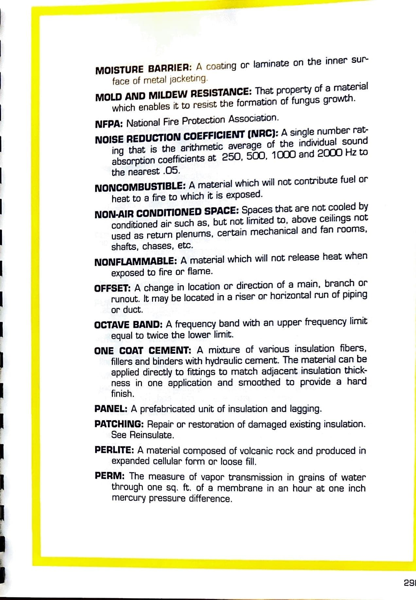
: A coating or laminate on the inner sur- MOISTURE BARRIER face of metal Jacketing.
MOLD AND MILDEW RESISTANCE: That properb/ of a material which enables it to resist the formation of fungus growth NFPA: National fire Protection Association.
NOISE REDUCTION COEFFICIENT (NRC): A single number rat- ing that is the arithmetic average of the individual sound absorption coefficients at 250, 500, 1000 and 2000 Hz to the nearest .05.
NONCOMBUSTIBLE: A material which not conmbute fuel or heat to a fire to which it is exposed.
NON-AIR CONDmONED SPACE: Spaces that are not cooled by conditioned air such as, but not limited to, above ceilings not used as return plenums, certain mechanical and fan rooms, shafts, chases, etc.
NONFLAMMABLE: A material which Will not release heat when exposed to fire or flame.
OFFSET: A change in location or direction of a main, branch or runout.
It may be located in a riser or horizontal run of piping or duct.
OCTAVE BAND: A frequency band with an upper frequency limit equal to twice the lower limit.
ONE COAT CEMENT: A mixture of various insulation fibers, fillers and binders with hydraulic cement.
The material can be applied directly to fitings to match adjacent insulation thick- ness in one application and smoothed to provide a hard finish.
PANEL: A prefabricated unit of insulation and lagging.
PATCHING: Repair or restoration of damaged existing insulation.
See Reinsulate.
PERLITE: A material composed of volcanic rock and produced in expanded cellular form or loose fill.
PERM: The measure of vapor transmission in grains of water through one sq.
ft.
of a membrane in an hour at one inch mercury pressure difference.
29
Page 309
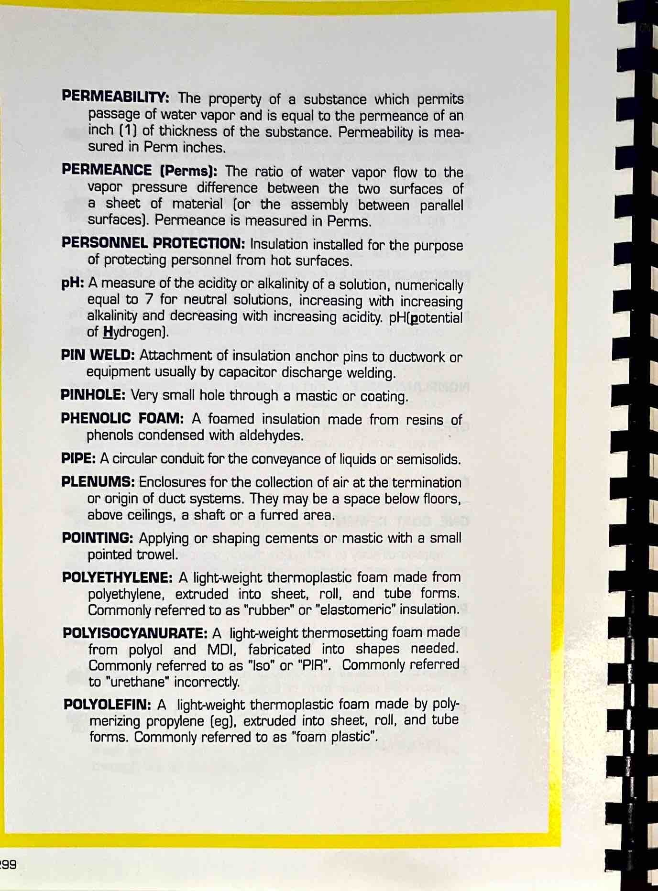
PERMEABILITY: The property of a substance which permits passage of water vapor and is equal to the permeance of an inch (1) of thickness of the substance.
Permeability is mea- sured in Perm inches.
PERMEANCE (Perms): The ratio of water vapor flow to the vapor pressure difference between the buo surfaces of a sheet of material (or the assembly beüeen parallel surfaces).
Permeance is measured in Perms.
PERSONNEL PROTECTION: Insulation installed for the purpose of protecting personnel from hot surfaces.
PH: A measure of the acidity or alkalinity of a solution, numerically equal to 7 for neutral solutions, increasing with increasing alkalinity and decreasing with increasing acidity.
pH(potential of Hydrogen).
PIN WELD: Attachment of insulation anchor pins to ductwork or equipment usually by capacitor discharge welding.
PINHOLE: Very small hole through a mastic or coating.
PHENOLIC FOAM: A foamed insulation made from resins of phenols condensed with aldehydes.
PIPE: A circular conduit for the conveyance of liquids or semisolids.
PLENUMS: Enclosures for the collection of air at the termination or origin of duct systems.
They may be a space below floors, above ceilings, a shaft or a furred area.
POINTING: Applying or shaping cements or mastic with a small pointed trowel.
POLYETHYLENE: A light-weight thermoplastic foam made from polyethylene, extruded into sheet, roll, and tube forms.
Commonly referred to as "rubber" or "elastomeric" insulation.
POLYISOCYANURATE: A light-weight thermosetting foam made from polyol and MDI, fabricated into shapes needed.
Commonly referred to as "Iso" or "PIR".
Commonly referred to "urethane" incorrectly.
POLYOLEFIN: A light-weight thermoplastic foam made by poly- merizing propylene (eg), extruded into sheet, roll, and tube forms.
Commonly referred to as "foam plastic".
Page 310
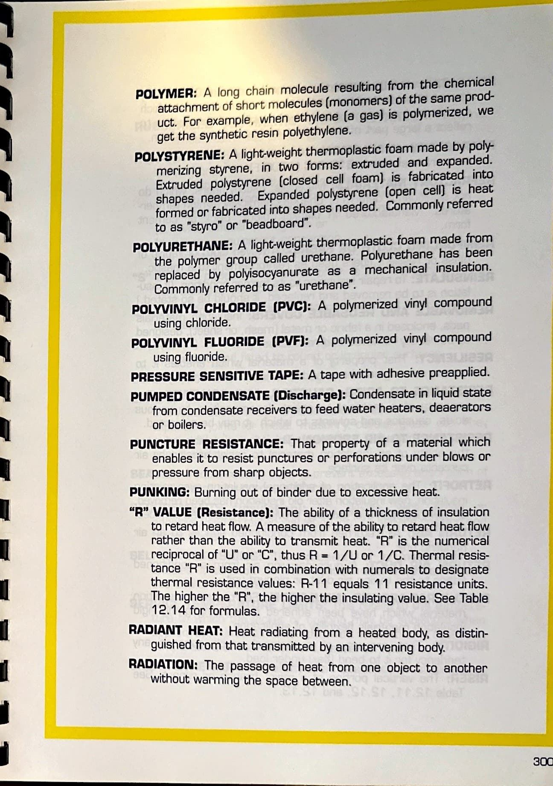
A long chain molecule resulting from the chemical POLYMER: attachment of short molecules (monomers) of the same prod- uct.
For example, when ethylene (a gas) is polymerized, we get the synthetic resin polyethylene.
POLYSTYRENE: A light-weight thermoplastic foam made by poly- merizing styrene, in two forms." extruded and expanded.
Extruded polystyrene (closed cell foam) is fabricated into shapes needed.
Expanded polystyrene (open cell) is heat formed or fabricated into shapes needed.
Commonly referred to as "styro" or "beadboard".
POLYURETHANE: A light-weight thermoplastic foam made from the polymer group called urethane.
Polyurethane has been replaced by polyisocyanurate as a mechanical insulation.
Commonly referred to as "urethane".
POLYVINYL CHLORIDE (PVC): A polymerized vinyl compound using chloride.
POLYVINYL FLUORIDE (PVF): A polymerized vinyl compound using fluoride.
PRESSURE SENSITIVE TAPE: A tape with adhesive preapplied.
PUMPED CONDENSATE (Discharge): Condensate in liquid state from condensate receivers to feed water heaters, deaerators or boilers.
PUNCTURE RESISTANCE: That property of a material which enables it to resist punctures or perforations under blows or pressure from sharp objects.
PUNKING: Burning out of binder due to excessive heat.
"R" VALUE (Resistance): The ability of a thickness of insulation to retard heat flow.
A measure of the ability to retard heat flow rather than the ability to transmit heat.
"R" is the numerical reciprocal of "U" or thus R = 1/1J or I/C.
Thermal resis- tance "R" is used in combination with numerals to designate thermal resistance values: R-1 1 equals 11 resistance units.
The higher the "R", the higher the insulating value.
See Table 12.14 for formulas.
RADIANT HEAT: Heat radiating from a heated body, as distin- guished from that transmitted by an intervening body.
RADIATION: The passage of heat from one object to another without warming the space between.
Page 311
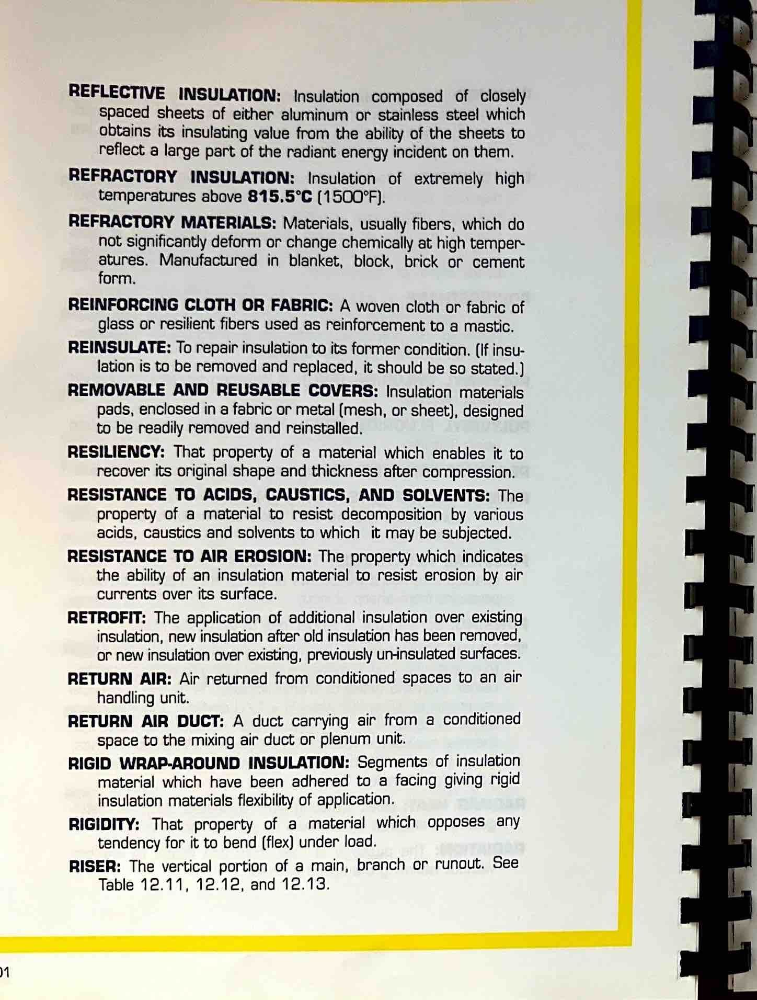
REFLECTIVE INSULATION: Insulation composed of closely spaced sheets of either aluminum or stainless steel which obtains its insulating value from the ability of the sheets to reflect a large part of the radiant energy incident on them.
REFRACTORY INSULATION: Insulation of extremely high temperatures above 815.50C (15000F).
REFRACTORY MATERIALS: Materials, usually fibers, which do not significantly deform or change chemically at high temper- atures.
Manufactured in blanket, block, brick or cement form.
REINFORCING CLOTH OR FABRIC: A woven cloth or fabric of glass or resilient fibers used as reinforcement to a mastic.
REINSULATE: To repair insulation to its former condition.
(If insu- lation is to be removed and replaced, it should be so stated.) REMOVABLE AND REUSABLE COVERS: Insulation materials pads, enclosed in a fabric or metal (mesh, or sheet), designed to be readily removed and reinstalled.
RESILIENCY: That property of a material which enables it to recover its original shape and thickness after compression.
RESISTANCE TO ACIDS, CAUSTICS, AND SOLVENTS: The property of a material to resist decomposition by various acids, caustics and solvents to which it may be subjected.
RESISTANCE TO AIR EROSION: The property which indicates the ability of an insulation material to resist erosion by air currents over its surface.
RETROFIT: The application of additional insulation over existing insulation, new insulation after old insulation has been removed, or new insulation over existing, previously un-insulated surfaces.
RETURN AIR: Air returned from conditioned spaces to an air handling unit.
RETURN AIR DUCT: A duct carrying air from a conditioned space to the mixing air duct or plenum unit.
RIGID WRAP-AROUND INSULATION: Segments of insulation material which have been adhered to a facing giving rigid insulation materials flexibility of application.
RIGIDITY: That property of a material which opposes any tendency for it to bend (flex) under load.
RISER: The vertical portion of a main, branch or runout, See Table 12.11, 12.12, and 12.13.
Page 312
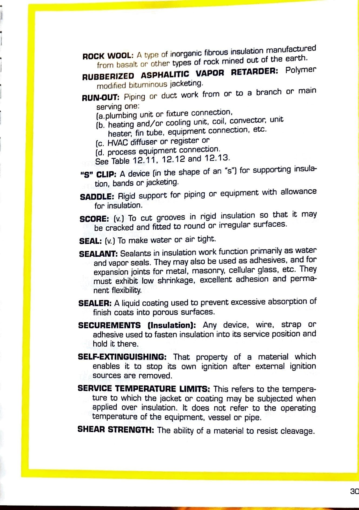
A type of inorganic fibrous insulation manufactured ROCK WOOL: from basalt or other types of rock mined out of the earth.
RUBBERIZED ASPHALITIC VAPOR RETARDER: Polymer modified bituminous jacketing.
RUN-OUT: Piping or duct work from or to a branch or main serving one: (a.plumbing unit or fixture connection, (b.
heating and/or cooling unit, coil, convector, unit heater.
fin tube, equipment connection, etc.
(c.
HVAC diffuser or register or (d.
process equipment connection.
see Table 12.11, 12.12 and 12.13.
"S" CLIP: A device (in the shape of an for supporting insula- tion, bands or jacketing.
SADDLE: Rigid support for piping or equipment with allowance for insulation.
SCORE: (v.) To cut grooves in rigid insulation so that it may be cracked and fitted to round or irregular surfaces.
SEAL: (v.) To make water or air tight.
SEALANT: Sealants in insulation work function primarily as water and vapor seals.
They may also be used as adhesives, and for expansion joints for metal, masonry, cellular glass, etc.
They must exhibit low shrinkage, excellent adhesion and perma- nent flexibility.
SEALER: A liquid coating used to prevent excessive absorption of finish coats into porous surfaces.
SECUREMENTS (Insulation): Any device, wire, strap or adhesive used to fasten insulation into its service position and hold it there.
SELF-EXTINGUISHING: That property of a material which enables it to stop its own ignition after external ignition sources are removed.
SERVICE TEMPERATURE LIMITS: This refers to the tempera- ture to which the jacket or coating may be subjected when applied over insulation.
It does not refer to the operating temperature of the equipment, vessel or pipe.
SHEAR STRENGTH: The ability of a material to resist cleavage.
ac
Page 313
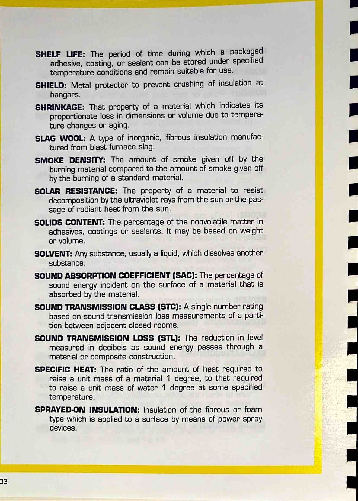
SHELF LIFE: The period of time during which a packaged adhesive, coating.
or sealant can be stored under specified temperature conditions and remain suitable for use.
SHIELD: Metal protector to prevent crushing of insulation at hangars.
SHRINKAGE: That property of a material which indicates its proportionate loss in dimensions or volume due to tempera- ture changes or aging.
SLAG WOOL: A type of inorganic, fibrous insulation manufac- tured from blast furnace slag.
SMOKE DENSITY: The amount of smoke given off by the burning material compared to the amount of smoke given off by the burning of a standard material.
SOLAR RESISTANCE: The property of a material to resist decomposition by the ultraviolet rays from the sun or the pas- sage of radiant heat from the sun.
SOLIDS CONTENT: The percentage of the nonvolatile matter in adhesives, coatings or sealants.
It may be based on weight or volume.
SOLVENT: Any substance, usually a liquid, which dissolves another substance.
SOUND ABSORPTION COEFFICIENT (SAC): The percentage of sound energy incident on the surface of a material that is absorbed by the material.
SOUND TRANSMISSION CLASS (STC): A single number rating based on sound transmission loss measurements of a parti- tion between adjacent closed rooms.
SOUND TRANSMISSION LOSS (STL): The reduction in level measured in decibels as sound energy passes through a material or composite construction.
SPECIFIC HEAT: The ratio of the amount of heat required to raise a unit mass of a material 1 degree, to that required to raise a unit mass of water 1 degree at some specified temperature.
SPRAYEDON INSULATION: Insulation of the fibrous or foam type which is applied to a surface by means of power spray devices.
Page 314
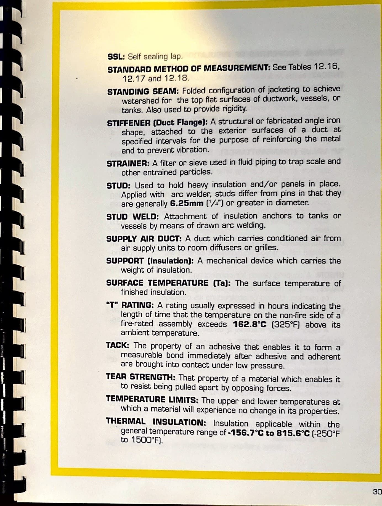
SSL: Self sealing lap.
STANDARD METHOD OF MEASUREMENT: see Tables 12.16, 12.17 and 12.18.
STANDING SEAM: Folded configuration of jacketing to achieve watershed for the top flat surfaces of ductwork, vessels, or tanks.
Also used to provide rigidity.
STIFFENER (Duct Flange): A structural or fabricated angle iron shape, attached to the exterior surfaces of a duct at specified intervals for the purpose of reinforcing the metal and to prevent vibration.
STRAINER: A filter or sieve used in fluid piping to trap scale and other entrained particles.
STUD: IJsed to hold heaw insulation and/or panels in place.
Applied with arc welder, studs differ from pins in that they are generally 6.25mm (1/4") or greater in diameter.
STUD WELD: Attachment of insulation anchors to tanks or vessels by means of drawn arc welding.
SUPPLY AIR DUCT: A duct which carries conditioned air from air supply units to room diffusers or grilles.
SUPPORT (Insulation): A mechanical device which carries the weight of insulation.
SURFACE TEMPERATURE (Ta): The surface temperature of finished insulation.
"T" RATING: A rating usually expressed in hours indicating the length of time that the temperature on the non-fire side of a fire-rated assembly exceeds 162.80C (3250F) above its ambient temperature.
TACK: The property of an adhesive that enables it to form a measurable bond immediately after adhesive and adherent are brought into contact under low pressure.
TEAR STRENGTH: That property of a material which enables it to resist being pulled apart by opposing forces.
TEMPERATURE LIMITS: The upper and lower temperatures at which a material will experience no change in its properties.
THERMAL INSULATION: Insulation applicable within the general temperature range of •15S.70C to 815.60C (-2500F to 15000F).
ao
Page 315
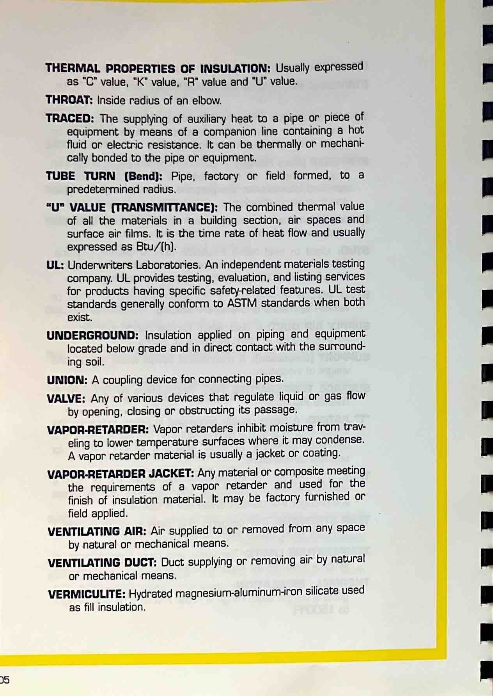
THERMAL PROPERTIES OF INSULATION: usually expressed as "C" value, "K" value, "R" value and "U" value.
THROAT: Inside radius of an elbow.
TRACED: The supplying of auxiliary heat to a pipe or piece of equipment by means of a companion line containing a hot fluid or electric resistance.
It can be thermally or mechani- cally bonded to the pipe or equipment.
TUBE TURN (Bend): Pipe, factory or field formed, to a predetermined radius.
"U" VALUE (TRANSMITTANCE): The combined thermal value of all the materials in a building section, air spaces and surface air films.
It is the time rate of heat flow and usually expressed as Btu/(h).
UL: Underwriters Laboratories.
An independent materials testing company.
UL provides testing, evaluation, and listing services for products having specific safety-related features.
LIL test standards generally conform to ASTM standards when both exist.
UNDERGROUND: Insulation applied on piping and equipment located below grade and in direct contact with the surround- ing soil.
UNION: A coupling device for connecting pipes.
VALVE: Any of various devices that regulate liquid or gas flow by opening, closing or obstructing its passage.
VAPOR-RETARDER: Vapor retarders inhibit moisture from trav- eling to lower temperature surfaces where it may condense.
A vapor retarder material is usually a jacket or coating.
VAPOR-RETARDER JACKET: Any material or composite meeting the requirements of a vapor retarder and used for the finish of insulation material.
It may be factory furnished or field applied.
VENTILATING AIR: Air supplied to or removed from any space by natural or mechanical means.
VENTILATING DUCT: Duct supplying or removing air by natural or mechanical means.
VERMICULITE: Hydrated magnesium-aluminum-iron silicate used as fill insulation.
Page 316
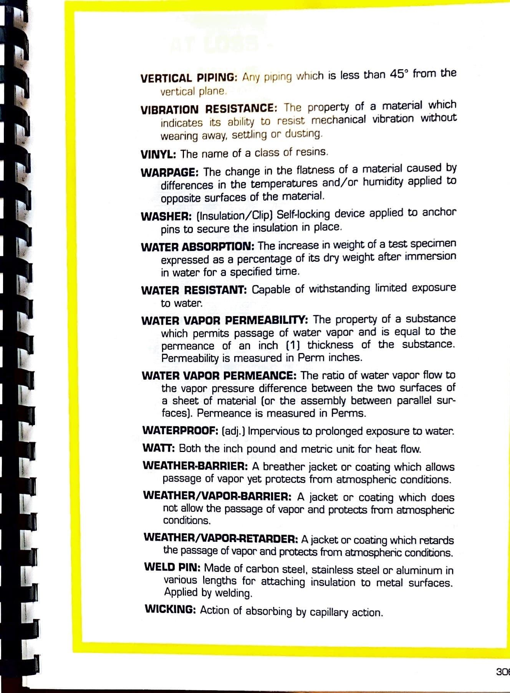
Any PIPtng which is less than 450 from the VERTICAL PIPING: vertical plane The property of a material which VIBRATION RESISTANCE: Indicates Its ability to resist mechanical vibration wrthout wearing away, settling or dusting VINYL: The name of a class of resins.
WARPAGE: The change in the flatness of a material caused by differences in the temperatures and/or humidity applied to opposite surfaces of the material.
WASHER: (Insulation/Clip) Self-locking device applied to anchor pins to secure the insulation in place WATER ABSORPTION: The increase in weight of a test specimen expressed as a percentage of its dry weight after immersion in water for a specified time.
WATER RESISTANT: Capable of mthstanding limited exposure to water.
WATER VAPOR PERMEABILITY: The property of a substance which permits passage of water vapor and is equal to the permeance of an inch (1) thickness of the substance.
Permeability is measured in Perm inches.
WATER VAPOR PERMEANCE: The ratio of water vapor flow to the vapor pressure difference between the two surfaces of a sheet of material (or the assembly between parallel sur- faces).
Permeance is measured in Perms.
WATERPROOF: (adj.) Impervious to prolonged exposure to water.
WATT: Both the inch pound and metric unit for heat flow.
WEATHER-BARRIER: A breather jacket or coating which allows passage of vapor yet protects from atmospheric conditions.
WEATHER/VAPOR-BARRIER: A jacket or coating which does not allow the passage of vapor and protects frun atrnospheric conditions.
WEATHER/VAPOR-RETARDER: A jacket or coating which the passage of vapor and prote& from au-nospheric conditions.
WELD PIN: Made of carbon steel.
stainless steel or aluminum in various lengths for attaching insulation to metal surfaces.
Applied by welding.
WICKING: Action of absorbing by capillary action.